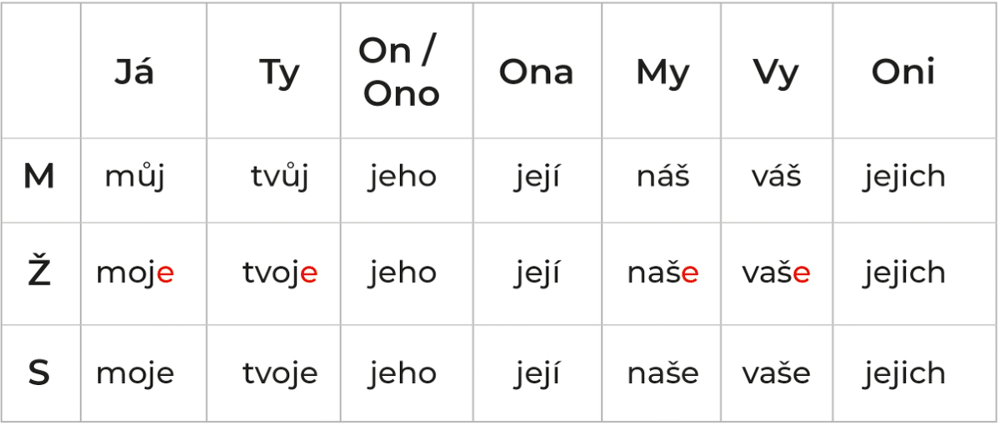
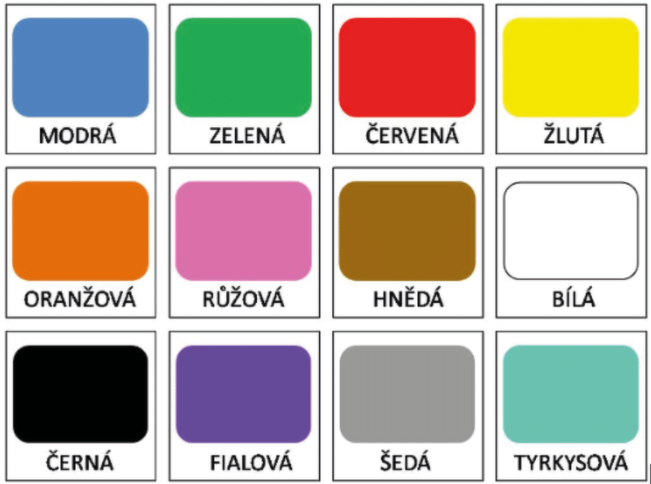
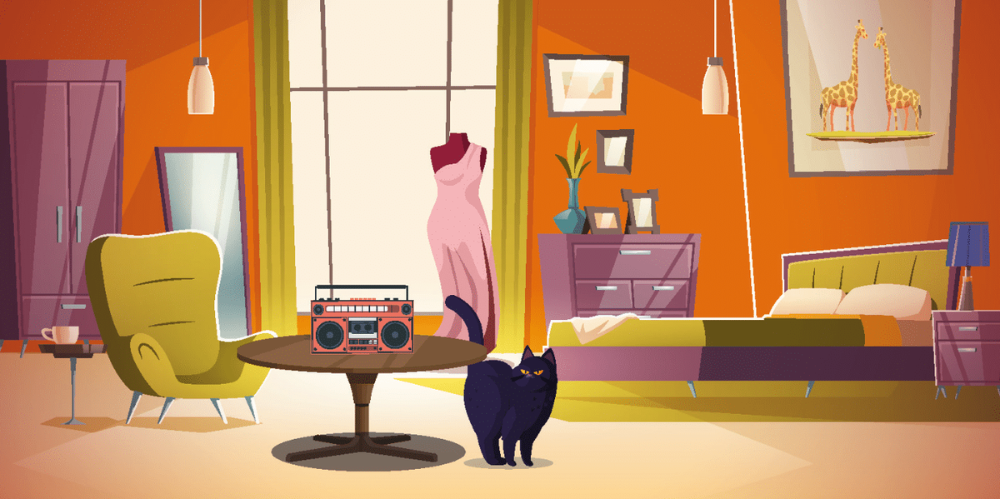

Sloveso «mít» a přivlastňovací zájmena (čí je to?)
Verb “to have” and possessive pronouns (whose is it?)
SLOVESO "MÍT"
In the last lesson we already covered pronouns, how they are read and pronounced. Let me repeat briefly:
já - I
ty - you
my - we
vy - you (pl)
on - he
ona - she
ono - it
oni - they
NEW WORDS
NOVÁ SLOVA
někdo - someone
návštěva - visit, guests
to znamená - this means
USEFUL PHRASES
UŽITEČNÉ FRÁZE
co znamená slovo...? What does the word mean...?
kdy nepracujete? - when you don’t work?
Let's watch the video first!
Positive form of the verb - mít
mám - maam = I have
máš - maash = You have
máme - maame = We have
máte - maate = You have
mají - mayee = They have
má - maa = He has, she has, it has
I have a car - Mám auto.
Do you have a car? — Máš auto?
The neighbor has a car - Soused má auto.
We have a car - Máme auto.
Do you have a car? — Máte auto?
They have a car - Mají auto.
Negative form of the verb - mít
nemám - nemaam = I don't have
nemáš - nemaash = You don't have
nemáme - nemaame = We don't have
nemáte - nemaate = You don't have
nemají - nemayee = They don't have
nemá - nemaa = He does not have, , she does not have, it does not have
I don’t have a book - Nemám knihu - Nemaam knihu
You don't have a book - Nemáš knihu - Nemaash knihu
She doesn’t have a book - Nemá knihu - Nemaa knihu (here you can use the pronouns on / ona / ono to clarify who exactly has it)
We don't have books - Nemáme knihu - Nemaame knihu
You don't have a book - Nemáte knihu - Nemaate knihu
They don't have a book - Nemají knihu - Nemají knihu
Practice. Verb "to have" - mít.
When? - Kdy?
In the morning - Ráno
During the day - Přes den
In the evening - Večer
Before lunch - Dopoledne
At lunch - V poledne
After lunch - Odpoledne
After work - Po práci
On the weekend - O víkendu
After sports - Po sportu
Always - Vždycky
Now - Teď
Mám čas - maam chas - I have time
Kdy máš čas - When do you have time?
Mám hlad - maam ghlad - I'm hungry
Máš hlad? - maash ghlad? - Are you hungry?
Mám žízeň - maam zheezen - I’m thirsty
Máte žízeň? - maate zheezen? - Are you thirsty? (pl)
Mám radost - maam radost - I'm glad
Mám češtinu - maam češtinu - I am studying Czech (I have Czech language class)
Teď mám češtinu - I am studying Czech now (Now I have Czech language class)
Mám snídani - maam snídani - I’m having breakfast
Mám oběd - maam obyed - I’m having lunch
Mám večeři - maam veecherzhi - I have dinner
Mám návštěvu - maam naavshtyevu - I have guests
Mám odpočinek - maam odpochinek - I’m on vacation
Below are the questions, try to answer them out aloud using the examples:
(Do you have time?) Example answer:- Mám čas po práci
1. Who knows?
2. Kdy máte žízeň?
3. Kdy máte radost?
4. Kdy máte češtinu?
5. Kdy máte snídani?
6. Kdy máte oběd?
7. Kdy máte večeři?
8. Kdy máte návštěvu?
9. Kdy máte odpočinek?
Přivlastňovací zájmena (possessive pronouns)

×

Nové fráze a slova (new phrases and words)
- To je MŮJ dům - to ye mooy doom - This is my home
- To je MŮJ kamarád - to ye mooy kamaraad - This is my friend
- To je TVŮJ dům - to ye tvooy duum - This is your home
- To je TVŮJ kamarád - to ye tvooj kamaraad - This is your friend
- To je JEHO dům - to ye yegho doom - This is his home
- To je JEHO kamarád - then ye yegho kamaraad - This is his friend
- To je JEJÍ dům - then ye yeyee doom - This is her house
- To je NÁŠ kamarád - then ye naash kamaraad - This is our friend
- To je VÁŠ dům - then ye vaash doom - This is your home (pl)
- To je JEJICH kamarád - then ye yeyih kamaráad - This is their friend
- To je MOJE kniha - to ye moye kniha - This is my book
- To je MOJE kamarádka - to ye moye kamaraadka - This is my girlfriend
- To je MOJE práce - then ye moye praatse - This is my job
- To je TVOJE kniha - to ye tvoye cnigha - This is your book
- To je TVOJE práce - to ye tvoye praatse - it's your job
- To je JEHO kniha - to ye yegho knigha - This is his book
- To je JEJÍ práce - to ye yeyii praatse - This is her job
- To je NAŠE kniha - to ye nashe knigha - This is our book
- To je VAŠE práce - yo ye vashe praatse - This is your job (pl)
- To je JEJICH kniha - yo ye yeyih knigha - This is their book
- To je MOJE auto - to ye moye auto - This is my car
- To je MOJE okno - to ye moye okno - This is my window
- To je TVOJE auto - to ye toye auto - This is your car
- To je TVOJE srdce - to ye tvoye srdtse - This is your heart
- To je JEHO auto — to ye yegho auto — This is his car
- To je JEJÍ okno — to ye yeyii okno — This is her window
- To je NAŠE auto — to ye nashe auto — This is your car (pl)
- To je VAŠE okno — to ye vashe okno — This is your window (pl)
- To je JEJICH auto — to ye yeyih auto — This is theirs car
Practice the verb mít
Jak se máš - yak se maash - How are you? (How is it going?)
Jak se máte - yak se maate - How are you? (pl)
dobře - dobrhe - good
výborně - excellent
skvěle - skviele - wonderful, wonderful
nic moc - nits mots - so-so
špatně - shpatne - bad
Základní barvy (primary colors)

×

Practice přivlastňovacích zájmen
Kdo je tvůj oblíbený herec?
Kdo je tvoje oblibená herečka?
Kdo je tvůj oblíbený zpěvák?
Kdo je tvoje oblíbená zpěvačka?
Který je tvůj oblíbený film?
Která je tvoje oblibená opera?
Která je tvoje oblíbená skupina?
Která je tvoje oblíbená kniha?
Který je tvůj oblíbený román?
Ktere je tvoje oblíbené jídlo?
Ktere je tvoje oblíbené pití?
Zajímavý dialog (interesting dialogue)
Petr: Mám problem!
Peter: Any problem?
Petr: Nemám čas.
Peter: Nemáš čas? To some extent! Asi máš peníze!
Petr: Nemám ani peníze.
Peter: Ani čas, ani peníze? To je absurdni! To never be normal!
Petr: Bohužel. Čas jsou peníze. Nemám čas - nemám peníze.
Peter: So much so. Kdo nemá čas, má peníze.
Petr: Asi ano. To je fact. Ale já nemám štěstí.
Bonus! How do I say I like it?
rád - when talking about the masculine gender
ráda - when talking about the feminine gender
rádo - when talking about the neuter gender
rádi - when talking about the plural
I like... mám rád/a ...
you like... máš rád/a ...
he likes... má rád/o ...
she likes... má ráda ...
we like... máme rádi ...
you like... máte rádi ...
they like... mají rádi ...
Mám rád pivo. Nemám rád vino.
Mám ráda vino. Nemám ráda beer.
My máme rádi pivo i víno
Pane Black, máte rád české jídlo? - Ano, mám rád české jídlo.
Paní Shortová, máte ráda pražské počasí? - Nemám ráda pražské počasí.
Pane Black a paní Shortová, máte rádi naše město? - Ano, máme rádi vaše město.
Paní Shortová a paní Krátká, máte rády naše metro? - Ne, nemáme rády vaše metro.
počasí - weather
jídlo - food/dish
HOMEWORK
DOMÁCÍ ÚKOL
1. Listen to the audio recording and record what you hear
2. Translate unfamiliar words and write them in the answer.
In case of need use dictionary link at the starting of unit.
Hannah: Ahoy! Máš rád české pivo?
Juan: No, to je otázka! Samozřejmě, že mám rád české pivo. What about you?
Hanna: Já nemám ráda pivo. Já mám ráda vino.
Juan: To je škoda! Jsi v Praze a nemáš ráda pivo!
Hanna: To je život!
Juan: České víno není dobré! Španělské a italské víno je dobré.
Hanna: To je pravda. Ale moravské víno je taky dobre. Mám ráda moravské víno.
Juan: Máš štěstí! V Praze mají moravské víno. Moravské víno není tak drahé jako španělské nebo italské.
Nová slova (new words)
učebnice - textbook
časopis - magazine
mám volno - I don't work, I'm free
sešit - notebook
léky - medicines
žák - student, mám žáky - I have students
kotě - kitten
míč - ball
prázdniny - holidays
peníze - money
štěstí - happiness
fix - marker
lékárna - pharmacy
v lékárně - in the pharmacy
manželka - wife
slovník - dictionary
byt - apartment
v bytě - in the apartment
dívka - girl
divadlo - theater
v divadle - in the theater
strom (M) - mužský rod - tree
počítač (M) - computer
učebna (Ž) - study room
objednávka (Ž) - order
knihovna (Ž) - library
zahrada (Ž) - garden
kuchyň (Ž) - kitchen
káva (Ž) - coffee
les (M) - forest
zvíře (S) - beast
město (S) - city
snídaně (Ž) - breakfast
bratranec (M) - cousin
přítel (M) - friend (meaning boyfriend)
lednice (Ž) - refrigerator
miminko (S) - baby
koupelna (Ž) - bathroom
sen (M) - dream/dream
nůž (M) - knife
kaše (Ž) - porridge
lustr (M) - chandelier
3. Doplňte správné zájmeno podle vzoru.
4. Řekněte, čí to je?
5. Doplňte správné formy slovesa mít do vět.
6. Doplňte správné formy slovesa NEmít (negation) do vět.
7. Na obrázku je pokoj. Odpovězte na otázky podle vzoru.

×

- Je ta kočka bílá?
- Je ta váza zelená?
- Je ta podlaha černá?
- Je to okno špinavé?
- Je ta skříň zavřená?
- Je to zrcadlo vpravo?
- Je ta lampa žlutá?
Next unit